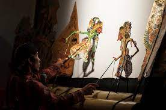

Introduction
Shadow Puppetry, Oct 29, 2023
 Shadow PuppetryShadow puppetry, or Wayang Kulit, is an ancient type of storytelling which uses flat articulated cut-out figures which are held between a source of light and a translucent screen or scrim. The cut-out shapes of the puppets sometimes include translucent color or other types of detailing. Various effects can be achieved by moving both the puppets and the light source. A talented puppeteer, or dhalang, can make the figures appear to walk, dance, fight, nod and laugh.
Our shadow puppet show is about a skilled warrior, Rokkal, who fights Xingxong, a powerful and cunning Chinese warrior, who is set on seizing control of the village Rokkal protects. Rokkal’s agility versus Xingxong’s strength. But Xingxong greatly underestimated Rokkal, which is proven when Rokkal suddenly mounts a cat, and defeats Xingxong. Rokkal and the feline companion are victorious, and the village is safe once again.